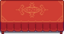
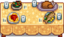

家具
:关于制造的装饰品，请见制造页面。
家具可以从木匠的商店的罗宾或旅行货车处购买。木匠的商店每天都有随机种类的家具可供选购，且价格是固定的；而旅行货车出售的家具种类以及价格都是随机的，价格区间在 250 ~ 2,500金。
250 ~ 2,500金。
一些家具只能通过捐赠物品到博物馆获得、在节日上购买、赌场、Joja超市以及其他方式。这些例外情况都将在下列表格中列出。
农舍首次升级后，木匠的商店的罗宾会出售家具目录，放置后对其右键使用可以免费且无限量购买目录中的家具。
杀死怪物获得的怪物战利品、打破木箱和木桶、摇晃或砍伐树、用锄头锄远古斑点或淘金也有很小的概率找到一些特殊的家具物品。
大多数家具可以放置在室外[1]，然而有些只能放置在农舍和小屋内。可放置家具的地块上会显示绿色的方格，否则显示红色。注：如果家具摆放阻挡了村民的行走路线，会被村民推到旁边。
家具无法通过出售箱或在任何商店里出售，也不能作为礼物送给村民。
控制
- 电脑：选中家具时，单击
 鼠标右键以旋转或放置家具，具体取决于物品。一些家具可以通过
鼠标右键以旋转或放置家具，具体取决于物品。一些家具可以通过 鼠标左键轻松地拿起和移动；其他家具一旦被放置，则需要玩家使用工具或按住左键将其移除。
鼠标左键轻松地拿起和移动；其他家具一旦被放置，则需要玩家使用工具或按住左键将其移除。 - Nintendo Switch：使用
 A键旋转家具。
A键旋转家具。 - Xbox: 如果没有使用右摇杆移动指针指定位置，空间足够的情况下按 X 键或 A 键可以将家具直接放置在玩家的前方。站在物品的前方并按下 X 键可以拾起家具。玩家可使用右摇杆移动指针位置，指针处会显示物品的半透明图像，提示该位置可否放置，此时按下 X 键可以放置或拾起家具。部分家具在放置前可以先通过 A 键进行旋转。
- 所有操作系统：一些家具只能通过使用工具拿起，或者按住“使用工具”按钮（电脑鼠标左键）移除。
椅子
家具目录中提供的所有椅子可以从旅行货车处以 250 ~ 2,500金的价格购买。
250 ~ 2,500金的价格购买。
椅子可以放置在室外。
|
|
长椅
家具目录中提供的所有长椅可以从旅行货车处以 250 ~ 2,500金的价格购买。
250 ~ 2,500金的价格购买。
长椅可以放置在室外。
| 物品 | 来源 | 价格 |
|---|---|---|
| 木匠的商店 | ||
| 家具目录 | ||
| 家具目录 | ||
| 家具目录 | ||
| 家具目录 |
沙发
家具目录中提供的所有沙发可以从旅行货车处以 250 ~ 2,500金的价格购买。
250 ~ 2,500金的价格购买。
除了发霉的沙发，其余沙发均不能放置在室外。
|
|
单人沙发
家具目录中提供的所有单人沙发可以从旅行货车处以 250 ~ 2,500金的价格购买。
250 ~ 2,500金的价格购买。
单人沙发不能放置在室外。
| 物品 | 来源 | 价格 |
|---|---|---|
| 家具目录 | ||
| 家具目录 | ||
| 家具目录 | ||
| 家具目录 | ||
| 家具目录 |
桌子
所有家具目录提供的桌子均可从旅行货车处以 250 ~ 2,500金的价格购买。
250 ~ 2,500金的价格购买。
桌子可以用来放置物品，拿着物品并右键点击桌子可将其摆放在上面。如果是大桌子，则需要站在靠近桌子中间的位置来放置，否则会直接把桌子收起来。
桌子可以放置在室外。
长桌
家具目录中提供的所有长桌可以从旅行货车处以 250 ~ 2,500金的价格购买。
250 ~ 2,500金的价格购买。
冬日餐桌也可以在冰雪节以 3,000金的价格购买，节日餐桌也可以在冬日星盛宴以
3,000金的价格购买，节日餐桌也可以在冬日星盛宴以 3,000金的价格购买。
3,000金的价格购买。
长桌可以用来放置物品，拿着物品并右键点击长桌可将其摆放在上面，但需要站在靠近中间的位置来放置，否则会直接把桌子收起来。
长桌可以放置在室外。
| 物品 | 来源 | 价格 |
|---|---|---|
| 木匠的商店 | ||
|  节日餐桌 | ||
| 家具目录 | ||
| 家具目录 | ||
| 家具目录 | ||
|  丰盛餐桌 | 家具目录 |
书架
家具目录中提供的所有书架可以从旅行货车处以 250 ~ 2,500金的价格购买。
250 ~ 2,500金的价格购买。
书架不能放置在室外。
|
|

梳妆台
家具目录中提供的所有梳妆台可以从旅行货车处以 250 ~ 2,500金的价格购买。
250 ~ 2,500金的价格购买。
梳妆台可以用来存放衣服，帽子，鞋子和戒指。只要还存放着物品，就无法使用垃圾桶从背包中删除它们。
梳妆台不能放置在室外。
|
|
壁炉
放置壁炉后，对其右键点击可以点燃或熄灭壁炉。
壁炉不能放置在室外。
|
|
地毯
如果地毯上还放有东西，就无法拿起地毯。
地毯不能放置在室外。
|
|


地板分隔条
地板分隔条不能放置在室外。
|
垫子
垫子不能放置在室外。
|
|
灯具
家具目录中提供的所有灯具可以从旅行货车处以 250 ~ 2,500金的价格购买。
250 ~ 2,500金的价格购买。
在晚上，下面列出的所有台灯在大约 6 格半径内提供光线，所有壁挂灯在大约 2 格半径内提供光线。
|
|
窗户
窗户不能放置在室外。
|
|
电视
家具目录中提供的所有电视可以从旅行货车处以 250 ~ 2,500金的价格购买。
250 ~ 2,500金的价格购买。
标准农场和四角农场开始时自带廉价电视，其他农场开始时自带落地电视。等离子电视占地面积较大，需要在农舍第一次升级后解锁购买。
除坏电视外，所有电视均不能放置在室外。
|
|
床
家具目录中提供的所有床可以从旅行货车处以 250 ~ 2,500金的价格购买。
250 ~ 2,500金的价格购买。
玩家可以在床上睡觉来结束一天并恢复能量和生命值。玩家不能睡在儿童床上。
床不能放置在室外，并且只能放置在可居住区域内（比如小屋就不可以）。
|
|


装饰植物
家居植物
以下15种家居植物可以以 250金的价格从木匠的商店购买，在旅行货车以
250金的价格从木匠的商店购买，在旅行货车以 250 ~ 2,500金的价格购买，或者以
250 ~ 2,500金的价格购买，或者以 0金从家具目录获得。
0金从家具目录获得。
家居植物可以放置在室外。
| 家居植物 | ||||||||||||||
|---|---|---|---|---|---|---|---|---|---|---|---|---|---|---|
独立式装饰植物
独立式装饰植物可以放置在室外。
|
|
悬挂式装饰植物
家具目录中提供的所有悬挂式装饰植物可以从[[旅行货车]处]以 250 ~ 2,500金的价格购买。
250 ~ 2,500金的价格购买。
悬挂式装饰植物不能放置在室外。
|
|
季节性植物
季节性植物可以放置在室外，并且外观会随着季节变化而变化。
| 春季 外观 |
夏季 外观 |
秋季 外观 |
冬季 外观 |
来源 | 价格 |
|---|---|---|---|---|---|
| 复活节 | |||||
| 夜市 | |||||
| 复活节 | |||||
| 夜市 | |||||
| 花舞节 | |||||
| 夜市 | |||||
| 夜市 | |||||
| 夜市 | |||||
| 花舞节 | |||||
| 夜市 |
精致盆栽
所有精致盆栽和前三种室内植物只能通过兑奖机获得，后两种室内植物则只能通过抓娃娃获得。
精致盆栽可以放置在室外。
|
| ||||||||||||||||
挂画
家具目录中提供的所有挂画可以从旅行货车处以 250 ~ 2,500金的价格购买。
250 ~ 2,500金的价格购买。
挂画不能放置在室外。
|
|
小型挂画位置
请注意，一些小型挂画挂在墙上比别的更高或更低。
夜市画
每晚当夜市开始时，著名画家卢皮尼都会展出一幅画作进行出售。这些画作以每3年为一轮展出，一共有9幅画作，都只在特定的日期才能购买获得。
| 物品 | 日期 | 价格 |
|---|---|---|
| 冬季15日，第1年 | ||
| 冬季16日，第1年 | ||
| 冬季17日，第1年 | ||
| 冬季15日，第2年 | ||
| 冬季16日，第2年 | ||
| 冬季17日，第2年 | ||
| 冬季15日，第3年 | ||
| 冬季16日，第3年 | ||
| 冬季17日，第3年 |
肖像
一旦单身村民成为你的配偶，并且达到14颗心的好感度，就可以在旅行货车处购买到他们对应的肖像。
肖像不能放置在室外。
|
|
电影海报
电影海报只能通过玩电影院里的抓娃娃机获取。每种海报只有在相应的电影上映时才能在抓娃娃机里随机出现。
电影海报不能放置在室外。
|
|
装饰门
装饰门不能放置在室外。
|
|
帘子
所有帘子都无法从旅行货车处购买。
帘子不能放置在室外。
|
墙壁装饰
墙壁装饰不能放置在室外。
|
|
鱼缸
拿着物品时右键鱼缸，就可以将某些物品加到鱼缸中。空手右键鱼缸可以获取鱼缸里面的物品。 放置在鱼缸里的物品位置和外观是随机的，可以通过重新放置鱼缸来改变，不需要移除物品。
鱼缸不能放置在室外。
| 物品 | 来源 | 价格 |
|---|---|---|
| 家具目录 | ||
| 家具目录 | ||
| 家具目录 | ||
| 豪华鱼缸 | 完成 热带鱼特别任务 后 |
|
| 家具目录 完成 热带鱼特别任务 后 |
||
完成系列任务 "大树桩" 后 |
||
火炬
火炬可以放置在室外。
| 物品 | 价格 | |||
|---|---|---|---|---|
| 无 | 无 | 无 | ||
| 无 | ||||
| 无 | 无 |
大型装饰
除碗柜和工业管道外，其他所有大型装饰都可以放置在室外。
|
|


小型装饰
所有小型装饰都可以放置在室外。
|
|
特殊物品
特殊物品可以放置在室外。
|
|
目录
目录可以放置在室外。
| 图片 | 名称 | 购买途径 | 购买价格 |
|---|---|---|---|
| 目录 | |||
 |
家具目录 | ||
| Joja 家具目录 | Joja超市 |
||
| 祝尼魔目录 | |||
| 复古目录 | |||
| 法师目录 | |||
| 垃圾目录 | 无 |
农舍家具
| 标准农场 | 河边农场 | 森林农场 | 山顶农场 |
|---|---|---|---|
|
|
|
|
|
| 荒野农场 | 四角农场 | 海滩农场 | 草原农场 |
|---|---|---|---|
|
|
|
|
|
漏洞
- 椅子（以及其他玩家可以坐的家具）可以用来绕过游戏中的一般障碍。通过放置椅子，坐在上面，然后从另一侧离开椅子的方式，玩家可以进入通常无法到达的区域。(比如：可以在第一年春季3日之前到达矿井。）
- 在合作游戏中，如果有不止一个玩家精确地同时拿起一个放置在桌子上的物品，那么该物品会被复制，每个玩家都会得到一个该物品。
参考
- ↑ 家具放置规则详见Furniture::placementRestriction。
历史
- 1.0：加入游戏。
- 1.1：现在所有物品都可以从家具目录获得。添加了几件新物品。
- 1.3.27：壁炉现在可以移动。添加了几件新物品。
- 1.4：梳妆台现可用于存储衣服、帽子、鞋类和戒指。
- 1.5：大多数家具现在可以放置在外面。床现在可以移动。添加了新物品（包括鱼缸类），新来源和新农场地图。
- 1.6：加入了新家具与新的主题家具目录。现在如果地毯上有东西，不能捡起地毯。装饰灯笼现在会发光。星空双人床、草莓双人床和海盗双人床不再能从家具目录中获得。现在放置的家具阻挡村民行进路线时会被推走而非摧毁。
| 家具 | |
|---|---|
| 椅子 | 橡木椅子 • 胡桃木椅子 • 桦木椅子 • 红木椅子 • 红色餐椅 • 蓝色餐椅 • 乡村椅 • 早餐椅 • 粉红办公椅 • 紫色办公椅 • 绿色办公凳 • 橙色办公凳 • 暗黑王座 • 餐椅（黄） • 餐椅（红） • 绿色毛绒座椅 • 粉色毛绒座椅 • 凛冬座椅 • 时髦座椅 • 可爱座椅 • 树桩座位 • 金属座椅 • 绿色板凳 • 蓝色板凳 • 国王座椅 • 水晶椅 • 热带椅子 • 沙漠椅子 • Joja 椅子 • Joja 凳子 • 法师椅子 • 法师凳子 • 祝尼魔椅子 • 祝尼魔凳子 • 复古椅子 • 复古凳子 • 塑料草坪椅子 |
| 长椅 | 橡木长椅 • 胡桃木长椅 • 桦木长椅 • 红木长椅 • 现代长椅 |
| 单人沙发 | 蓝色单人沙发 • 红色单人沙发 • 绿色单人沙发 • 黄色单人沙发 • 棕色单人沙发 |
| 沙发 | 蓝色沙发 • 红色沙发 • 绿色沙发 • 黄色沙发 • 棕色沙发 • 暗黑沙发 • 法师沙发 • 林木沙发 • 棕色长沙发 • Joja 沙发 • 祝尼魔沙发 • 复古沙发 • 发霉的沙发 |
| 桌子 | 橡木桌 • 胡桃木桌 • 桦木桌 • 红木桌 • 现代桌 • 凛冬之桌 • 日之桌 • 月之桌 • 拼图桌 • 糖果桌 • 夏威夷式宴会桌 • 暗黑桌 • 预言桌 • 酒桌 • 豪华桌 • 咖啡桌 • 新石器风格桌 • 石桌 • 酒桌（长） • 烈酒桌 • 沙漠桌子 • Joja 桌子 • Joja 咖啡桌 • 灰色 Joja 咖啡桌 • 法师桌子 • 药水桌子 • 药水长桌 • 祝尼魔桌子 • 复古桌子 |
| 茶几 | 橡木茶几 • 胡桃木茶几 • 桦木茶几 • 红木茶几 • 现代茶几 • Joja 可乐茶几 • 法师茶几 • 祝尼魔茶几 • 复古茶几 |
| 小茶几 | 橡木小茶几 • 橡木台灯小茶几 • 胡桃木小茶几 • 胡桃木台灯小茶几 • 桦木小茶几 • 桦木台灯小茶几 • 红木小茶几 • 桃花心木台灯小茶几 • 新式小茶几 • 冬日小茶几 • 祖母小茶几 • 沙漠小茶几 • Joja 小茶几 • 灰色 Joja 小茶几 • 法师小茶几 • 祝尼魔小茶几 • 复古小茶几 • 塑料草坪小茶几 |
| 长桌 | 冬日餐桌 • 节日餐桌 • 红木餐桌 • 现代餐桌 • 丰盛餐桌 |
| 书架 | 艺术家书架 • 豪华书架 • 现代书架 • 深色书架 • 矮书架 • Joja 书架 • 灰色 Joja 书架 • 法师大书架 • 法师书架 • 法师矮书架 • 法师小书架 • 祝尼魔书架 • 复古书架 |
| 梳妆台 | 橡木梳妆台 • 胡桃木梳妆台 • 桦木梳妆台 • 红木梳妆台 • Joja 抽屉柜 • 灰色 Joja 抽屉柜 • 法师抽屉柜 • 祝尼魔抽屉柜 • 复古抽屉柜 |
| 壁炉 | 红砖壁炉 • 石壁炉 • 铱壁炉 • 炉式壁炉 • 怪物壁炉 • 华丽壁炉 • 沙漠壁炉 • Joja 壁炉 • 法师壁炉 • 祝尼魔壁炉 • 复古壁炉 |
| 地毯 | 竹席 • 粗麻布地毯 • 木刻毛毯 • 怪物地毯 • 海洋地毯 • 红色地毯 • 拼色地毯 • 深色地毯 • 红色木屋地毯 • 绿色木屋地毯 • 神秘地毯 • 航海地毯 • 海盗地毯 • 水果沙拉地毯 • 骨头地毯 • 雪地地毯 • 淡绿色地毯 • 大号绿色地毯 • 冰地毯 • 古典地毯 • 大号红色地毯 • 大号木屋地毯 • 新潮地毯 • 现代地毯 • 花地毯 • 沙子地毯 • 沙漠地毯 • Joja 大地毯 • 方形 Joja 地毯 • Joja 小地毯 • Joja 地毯 • 符文地毯 • 漩涡地毯 • 星月地毯 • 石砖地板 • 方形祝尼魔地毯 • 圆形祝尼魔地毯 • 祝尼魔地毯 • 祝尼魔地垫 • 祝尼魔小地垫 • 复古大地毯 • 复古地毯 • 复古方形地毯 • 复古地垫 • 地板分隔条 |
| 垫子 | 蓝色垫子 • 黄色垫子 • 绿色垫子 • 红色垫子 • 棕色垫子 • 黑色垫子 • Joja 垫子 • 灰色 Joja 垫子 • 法师垫子 • 深色法师垫子 • 祝尼魔垫子 • 深色祝尼魔垫子 • 复古垫子 • 深色复古垫子 |
| 灯具 | 乡村台灯 • 箱式台灯 • 现代台灯 • 经典台灯 • 蜡烛灯 • 华丽灯 • Joja 落地灯 • 法师落地灯 • 祝尼魔落地灯 • 复古落地灯 • 壁挂灯 |
| 窗户 | 普通窗户 • 小型窗户 • 舷窗 • 封上的窗户 • 华丽窗户 • 木雕窗户 • 金属窗 • 三角窗户 |
| 电视机 | 廉价电视 • 等离子电视 • 落地电视 • 热带电视 • 复古电视 • 坏电视 |
| 床 | 儿童床 • 床 • 双人床 • 星空双人床 • 草莓双人床 • 海盗双人床 • 热带床 • 热带双人床 • 豪华红色双人床 • 现代双人床 • 原野双人床 • 渔夫双人床 • 桦木双人床 • 奇异双人床 • 蓝白条纹床 • 蓝白条纹双人床 • 午夜沙滩床 • 午夜沙滩双人床 • Joja 床 • 法师床 • 祝尼魔床 • 复古床 |
| 装饰植物 | 家居植物 • 长仙人掌 • 长棕榈 • 异国情调的树 • 豪华树 • 室内椰子树 • 修剪过的松树 • 修剪过的树 • 风干太阳花 • 小型植物 • 桌上盆栽 • 冬日星树 • 树柱 • 小型松树 • 盆景树 • 大盆栽 • 香龙血树 • 塑料植物 • 塑料树苗 • 红蘑菇盆栽 • 卷叶树 • 沼泽植物 • 祝尼魔花 • 祝尼魔植物 • 祝尼魔树 • 复古花 • 复古植物 • 季节性植物 • 精致盆栽 |
| 悬挂式装饰植物 | 天花板垂叶 • 丛林贴纸 • 小灯串 • 室内吊篮 • 冬季树贴纸 • 壁挂向日葵 • 壁挂小向日葵 • 棕榈树墙饰 • 壁篮 • 壁挂棕榈树 • 壁挂仙人掌 • 叶子墙板 • 深色叶子墙板 • 浅色叶子墙板 |
| 挂画 | 《穆扎玛鲁》 • 《生态山之夜》 • 《小径》 • 《宝石海的女王》 • 《香草别墅》 • 《原始运动》 • 《翡翠山》 • 《太阳#44》 • 《塔尖》 • 《高速公路 89》 • 卡利科瀑布 • 刺绣花朵 • 《太阳#45》 • 《小树苗》 • 《蓝莓》 • 《蓝色都市》 • 《舞动的小草》 • 《VGA乐园》 • 《风筝大师 '95》 • 色块组画 • 我的第一幅画 • 《火山》照片 • 绿叶画 • 《小船》 • 《林景》 • 长版《翡翠山》 • 《冰封之梦》 • 《物理101》 • 鳟鱼标本 • 《鱿鱼娃》 • 猪的图画 • 日照沙丘 • J.图画 • Joja 可乐图画 • Joja 总部图画 • 《符文》 • 《法师塔》 • 《虚空漩涡》 • 符号 • 《社区中心》 • 《小伙伴们》 • 《星之果实》 • 《小屋》 • 《时髦》 • 《抽象》 • 《星际飞船》 • 《双星》 • 《黑白格子》 • 《UFO》 |
| 夜市画 | 《红鹰》 • 《美人鱼肖像》 • 《太阳王国》 • 《云》 • 《1000年后》 • 《三棵树》 • 《蛇》 • 《热带鱼 #173》 • 《粘土之地》 |
| 肖像 | 阿比盖尔的肖像 • 艾米丽的肖像 • 海莉的肖像 • 莉亚的肖像 • 玛鲁的肖像 • 潘妮的肖像 • 亚历克斯的肖像 • 艾利欧特的肖像 • 哈维的肖像 • 山姆的肖像 • 塞巴斯蒂安的肖像 • 谢恩的肖像• 科罗布斯的肖像 • 年度最佳经理 |
| 电影海报 | 《它在雨中嚎叫》 • 《草原之王之旅：大电影》 • 《神秘事迹》 • 《自然奇观：探索我们这充满活力的世界》 • 《勇敢的小树苗》 • 《冷星牧场的奇迹》 • 《祖祖城特快快车》 • 《温布斯》 |
| 装饰门 | 装饰门 • Joja 装饰门 • 法师装饰门 • 祝尼魔装饰门 • 复古装饰门 |
| 帘子 | 云彩帘子 • 彩色帘子 • 冬季帘子 • 月光水母帘子 • 冰雪帘子 • 复古帘子 |
| 墙壁装饰 | 日历 • 壁花朋友 • 《烧焦的祭品》 • 骷髅海报 • 小照片 • Joja可乐灯 • 锚 • 世界地图 • 云朵贴纸 • 矿工标志 • 挂盾 • 怪物吊饰 • 天花板旗帜 • 海盗旗 • 草莓贴纸 • 夜空贴纸 • 壁挂南瓜 • 小壁挂南瓜 • 金字塔贴纸 • 救生圈 • 星空门贴纸 • 装饰耙子 • 木制镶板 • 装饰斧头 • 圆木镶板 • 咸鱼挂件 • 挂钟 • 装饰橡木梯子 • 装饰胡桃木梯子 • 电灯开关 • 插座 • 装饰铲子 • 挂剑 • 艺术照片 • 艺术照片2 • 皮埃尔的招牌 • 山姆的滑板 • 小鸡贴纸 • 异域宫殿 • 元素周期表 • 沾满尘土的头骨 • 模型飞机 • 沙漠旗 • 奶牛贴纸 • J • J. 灯 • Joja 可乐墙饰 • 女巫的扫帚 • 小药水架 • 药水架 • 双层小药水架 • 双层药水架 • 法师壁挂书架 • 祝尼魔壁挂牌匾 • 祝尼魔之星 • 公告板 |
| 鱼缸 | 现代鱼缸 • 小鱼缸 • 大鱼缸 • 豪华鱼缸 • 丛林鱼缸 • 水生动物保护所 |
| 火炬 | 树桩火炬 • 普通火炬 • 丛林火炬 |
| 大型装饰 | 碗柜 • 陶瓷柱子 • 金柱子 • 工业管道 • 图腾雕像 • 直立的晶洞 • 黑曜石花瓶 • 树懒骨架 • 骷髅雕像 • 鸡雕像 • 莉亚做的雕像 • 山姆的音响 • 温布斯雕像 • 波波雕像 • 紫蛇雕像 • 绿蛇雕像 • 大福坦熊 • 熊雕像 • 祝尼魔毛绒玩具 • 蝴蝶笼 • 饕餮雕像 • 铱制科罗布斯 • 装饰垃圾桶 • 立式钢琴 • 黑暗钢琴 • 衣帽架 • 装饰剑 • 晾衣绳 • 高雅花瓶 • 鸟屋 • 猫爬架 • 深色猫爬架 • 狗屋 • 深色狗屋 • 无线电台桌 • 卡利科三花雕像 • 装饰木桶 • Joja 保险箱 • Joja 箱子堆 • Joja 箱子 • Joja 购物车 • Joja 大箱子 • Joja 可乐冰箱 • 法师书桌 • 坩埚 • 祝尼魔屋家具 • 大祝尼魔屋 • 小祝尼魔屋 • 宣传册展示架 • 复古橱柜 |
| 小型装饰 | 唱歌的石头 • 装饰碗 • 福坦熊 • 地球仪 • 轮船模型 • 小巧水晶 • 装饰灯笼 • 小祝尼魔毛绒玩具 • 福坦兔 • 松鼠雕像 • Joja 可乐罐 • 收银机 • 多瓶药水 • 两瓶药水 • 水晶球 • 紫水晶球 • 黄水晶球 • 蓝水晶球 • 绿水晶球 • 红水晶球 • 一小叠书 • 一叠书 • 一大叠书 • 紫色书 • 蓝色书 • 黄色书 • 红色书 • 绿色书 • 棕色书 • 散落的紫色书 • 散落的绿色书 • 散落的黄色书 • 散落的红色书 • 散落的绿色书 • 散落的棕色书 • 一小堆书 • 一堆书 • 一大堆书 • 祝尼魔牌匾 • 祝尼魔罐子 • 祝尼魔袋子 • 祝尼魔包囊 • 祝尼魔小罐子 • 绿色睡觉祝尼魔 • 蓝色睡觉祝尼魔 • 红色睡觉祝尼魔 • 紫色睡觉祝尼魔 • 黄色睡觉祝尼魔 • 橙色睡觉祝尼魔 • 灰色睡觉祝尼魔 • 复古收音机 • 装饰活板门 • 塑料六连环 • 绿色瓶子 • 塑料袋 • 易拉罐 • 蓝色瓶子 • 半埋轮胎 • 轮胎 • 包装纸 • 打翻的饮料 • 脏乱的上衣 • 脏乱的短裤 |
| 特殊物品 | 普通圆木 • 圆木段 • 装饰干草捆 • 船标 • 邪恶雕像 • 大绿杖 • 大红杖 • 绿杖 • 红杖 • 混色杖 • 草坪火烈鸟 • 绒毛兔子 • 季节性装饰 • 一簇鲜花 • 免费仙人掌 • 茶具 • 鼓块 • 长笛块 • 墓石 • 石堆 • 假人模特 • 被诅咒的假人模特 • 石蛙 • 石祝尼魔 • 石猫头鹰 • 石鹦鹉 • 装甲 • 祝尼魔赛车街机系统 • 草原之王街机系统 • 汽水机 • 星露谷英雄奖杯 • 无尽财富之雕像 • 完美雕像 • 真正完美的雕像 |
| 秘密物品 | ??碎屑雕像?? • ??HMTGF?? • ??粉色柠檬?? • 刘易斯黄金像 • 石猫头鹰 • 奇怪的胶囊 • 空置的胶囊 |
| 目录 | 目录 • 家具目录 • Joja 家具目录 • 祝尼魔目录 • 复古目录 • 法师目录 • 垃圾目录 |